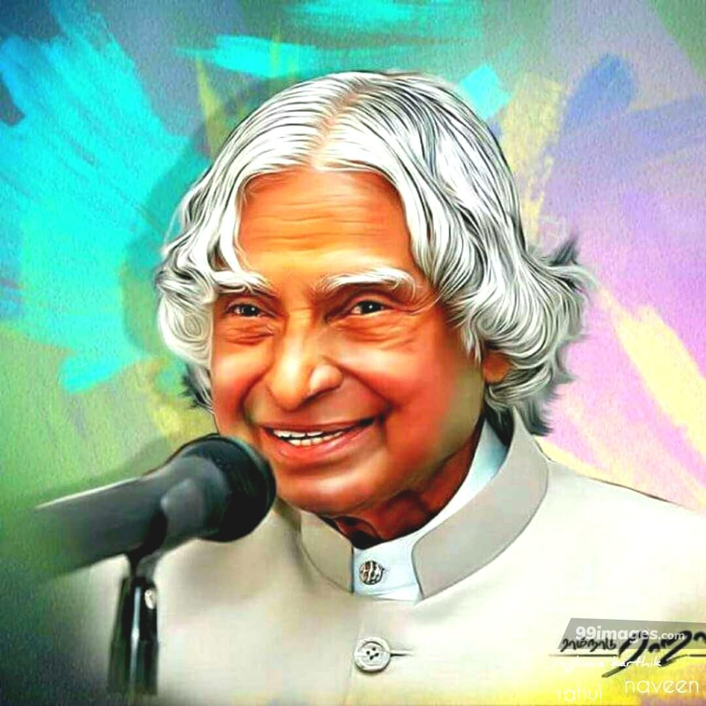

D.R APJ Abdul Kalam
Missile man of India

APJ Abdul Kalam
Here's a time line of Dr. APJ Abdul Kalam:
- 1931 : Born in Rameshwaram, Tamil Nadu Avul Pakir Jainulabdeen Abdul Kalam was born to
Jainulabdeen, a boat owner, and homemaker Ashiamma. He went to Ramanathapuram Schwartz
Matriculation School and worked from an early age to supplement the family income.
- 1954 : Graduates in Physics Kalam graduates in physics from Saint Joseph's College,
Tiruchirappalli. He moves to Madras to pursue further education after graduation.
- 1960 : Joins DRDO as scientist Kalam completes his degree in Aeronautical Engineering from
Madras Institute of Technology (MIT) and joins the Defense Research and Development Organization
(DRDO) as scientist.
- 1969 : Moves to ISRO Kalam moves to the Indian Space Research Organisation (ISRO) where he helms
India's first Satellite Launch Vehicle (SLV-III).
- 1980 : Lead's India's entry in the Space club Kalam leads India’s efforts to enter the space
club by putting the Rohini satellite in Earth's orbit with the first indigenous SLV-III
- 1980 : Develops Prithvi and Agni missiles As the chief of the Integrated Guided Missile
Development Programme, he is credited with the development and operationalisation of Agni and
Prithvi missiles.
- 1981 : Recieves the Padma Bhushan Kalam recieves the Padma Bhushan for his contribution to the
field of science and technology
- 1990 : Honoured with Padma Vibhushan Kalam is awarded the Padma Vibhushan, India’s second
highest civilian honour.
- 1992-1999 : Appointed India’s Chief Scientific Adviser Kalam is appointed as the Chief
Scientific Adviser to the Prime Minister and the Secretary of the DRDO.
- 1997 : Honoured with the Bharat Ratna Kalam is awarded the Bharat Ratna, India's highest
civilian honour for his contribution to the scientific research and modernisation of defence
technology in India.
- 1998 : Spearheads the Pokhran mission India conducts the Pokhran II nuclear tests with Kalam
being one of the forces behind its success
- 1999 — 2001 : Serves as India’s Chief Scientific Adviser Serves as Principal Scientific Advisor
to the Government of India.
- 2002 — 2007 : Elected as India's 11th President Kalam is elected the 11th President of India
succeeding KR Narayanan. He won the 2002 presidential election with an electoral vote of 922,884.
During his five years in office, he was fondly called ‘The People’s President'.
- 2012 : Launches 'What Can I Give Movement Kalam launches the ‘What Can I Give Movement’, a
programme for the Indian youth aimed at defeating corruption.
- 2015 : Passes away in Shillong, Meghalaya Kalam passes away aged 83, after collapsing
because of a cardiac arrest while delivering a lecture at IIM Shillon
If you have time, you should read more about this incredible human being on his Wikipedia entry.
Created by Joshi Eswar.
Free Code Camp TRIBUTE PAGE Project.
Created date 20-June-2020.